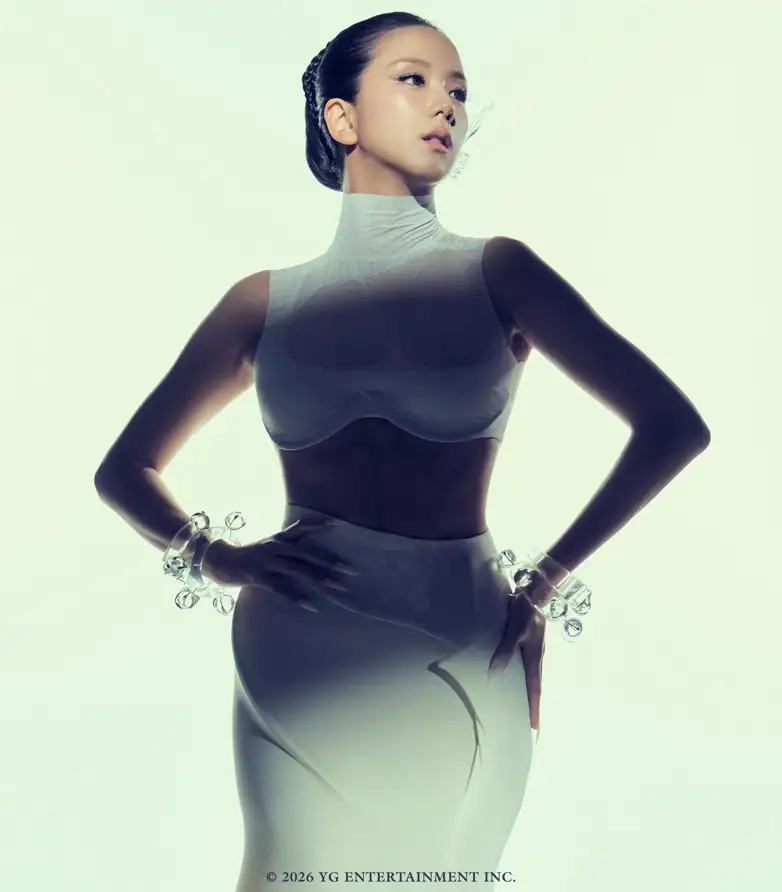
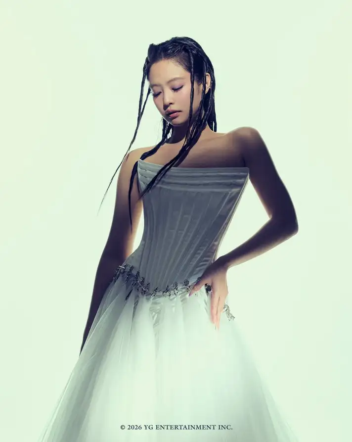
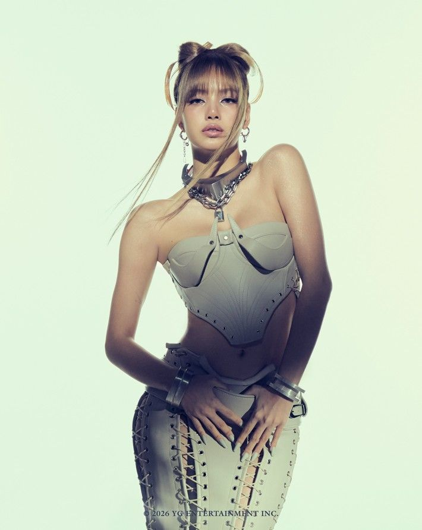
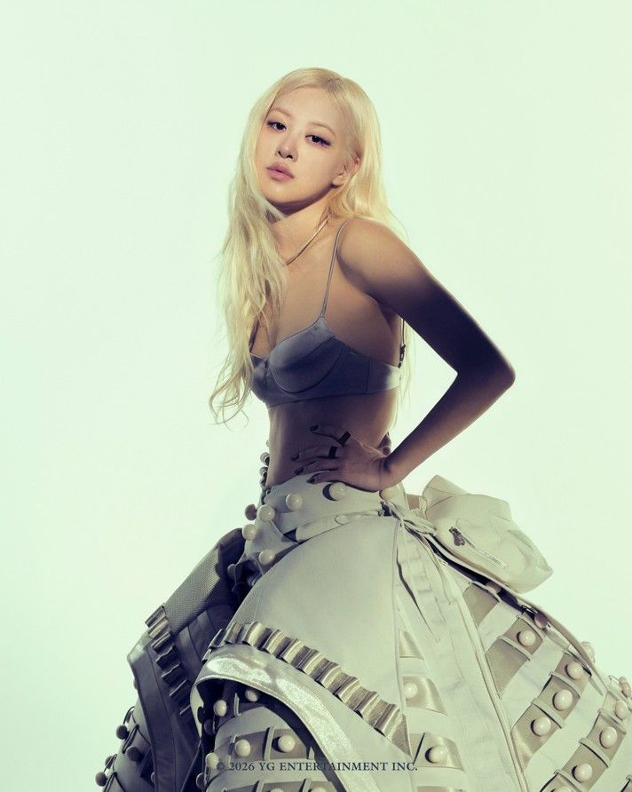

¿Quiénes son BLACKPINK?
BLACKPINK es un grupo femenino surcoreano formado por Jisoo, Jennie, Rosé y Lisa. El grupo debutó en 2016 bajo la compañía YG Entertainment, una de las agencias más importantes de la industria del K-Pop.
Su estilo combina pop, hip-hop y EDM.
Han roto récords en YouTube y escenarios internacionales.
Son consideradas uno de los grupos más influyentes del K-Pop.
Dead Line




BLACKPINK - GO (Video Oficial)